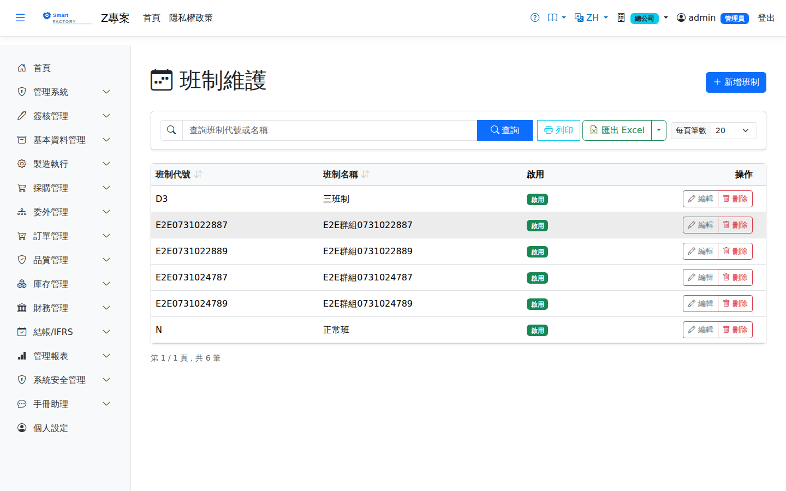

班別群組Shift Group
路由：/BAS/ShiftGroup | 每週七日的班別組合設定Route: /BAS/ShiftGroup | Seven-day weekly shift combinations
班別群組將已定義的班別組合成每週七日的排班表，並綁定至工作中心。排程引擎依工作中心的班別群組計算每日可用產能。A shift group combines the defined shifts into a seven-day weekly schedule and is bound to work centers. The scheduling engine calculates the daily capacity of a work center from its shift group.

班別群組畫面截圖（示意，實際欄位/資料依權限與查詢條件而異）Shift group screenshot (illustrative; actual fields and data vary by permission and query criteria)
欄位說明Field reference
群組基本資料Group basics
| 欄位名稱Field | 必填Required | 說明Guide |
|---|---|---|
| 群組代碼Group Code | 必填Required | 唯一識別碼（例：5D2S = 5 天 2 班制）Unique code (e.g. 5D2S = 5 days, 2 shifts) |
| 群組名稱Group Name | 必填Required | 完整名稱（例：五天兩班制）Full name (e.g. 5 days 2 shifts) |
| 是否預設Default | 勾選後新建工作中心時自動套用此群組Once checked, new work centers use this group automatically | |
| 是否啟用Active | 停用後不可被工作中心選取Once inactive, cannot be selected by work centers |
每日排班設定（群組明細）Daily schedule (group details)
切換至「每日班別」分頁，為週一至週日各自指定班別與正常/加班工時。Switch to the "Daily Shift" tab and assign a shift plus regular and overtime hours for Monday through Sunday.
| 欄位名稱Field | 必填Required | 說明Guide |
|---|---|---|
| 星期幾Weekday | 必填Required | 週一（1）至週日（7）Monday (1) to Sunday (7) |
| 正常工時（小時）Regular Hours (hrs) | 該日正常工作小時數（0 表示休假）Regular working hours for the day (0 means a day off) | |
| 加班工時（小時）Overtime Hours (hrs) | 該日加班小時數（通常為 0）Overtime hours for the day (usually 0) |
操作步驟Steps
1
先確認「班別」畫面中已建立所需的班別（如日班、夜班）。First make sure the shifts you need (day shift, night shift, …) already exist on the Shift screen.
2
進入「基本資料 > 班別群組」，點「新增」。Go to "Basic Data > Shift Group" and click "Add".
3
填入群組代碼、名稱後點「儲存」。Enter the group code and name, then click "Save".
4
重新開啟此群組，切換至「每日班別」分頁。Open the group again and switch to the "Daily Shift" tab.
5
為每天填入正常工時（週六日若休假填 0），點「儲存」。Enter the regular hours for each day (0 for Saturday and Sunday if they are days off), then click "Save".
6
至「工作中心」畫面，將此群組指定給相關工站。Go to the Work Center screen and assign the group to the relevant work centers.
一個工廠通常需要多個群組：例如「5天單班制」給辦公室，「5天兩班制」給生產線，「7天連續輪班」給特殊機台。A plant usually needs several groups: for example "5-day single shift" for the office, "5-day two shifts" for the production line, and "7-day continuous rotation" for special machines.
注意：Note:修改班別群組的每日工時後，下次重新排程時才會生效；已排定的排程時段不會自動變更。 Changes to the daily hours of a shift group take effect at the next rescheduling; time slots already scheduled are not changed automatically.